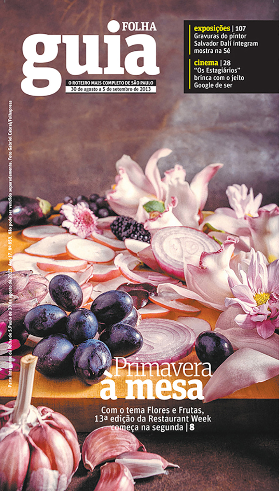
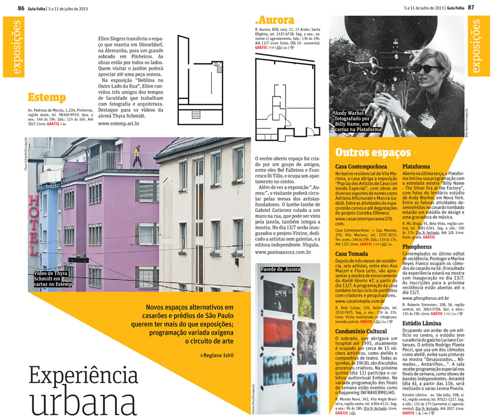
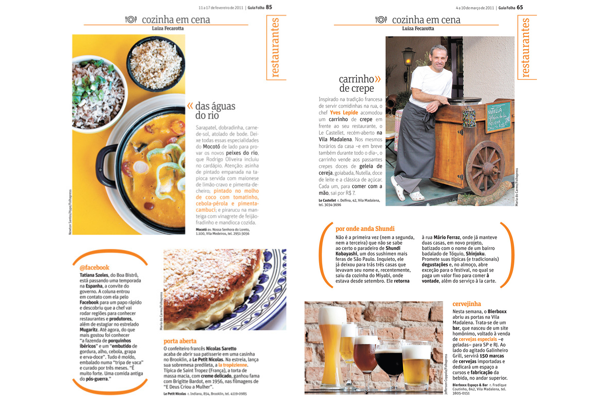
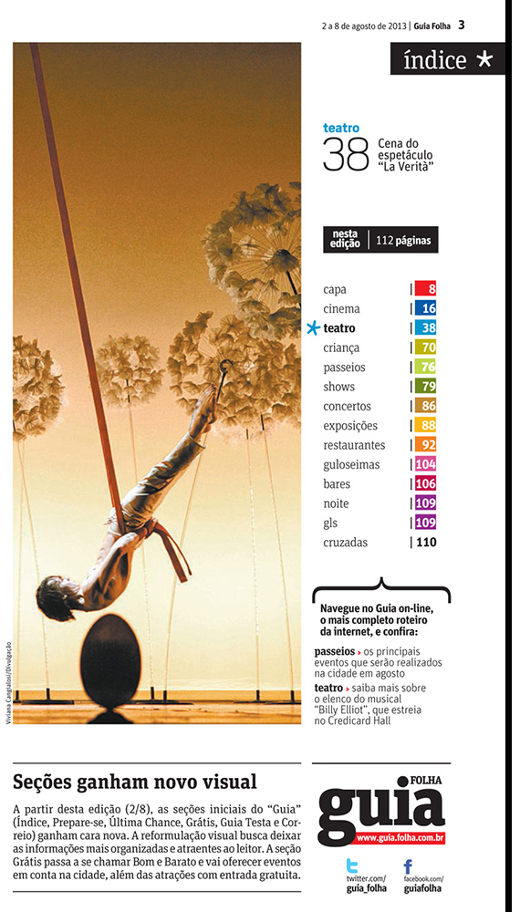
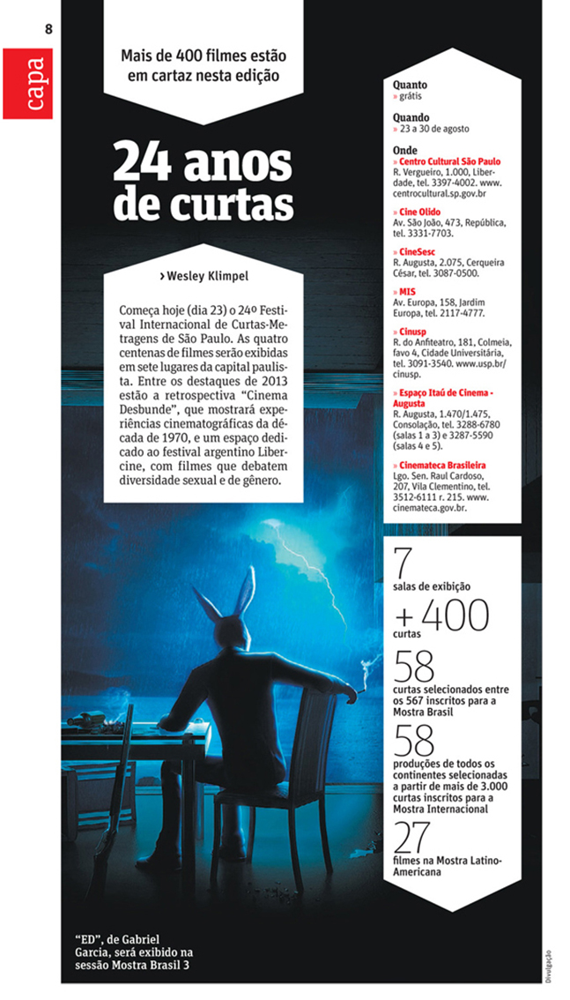
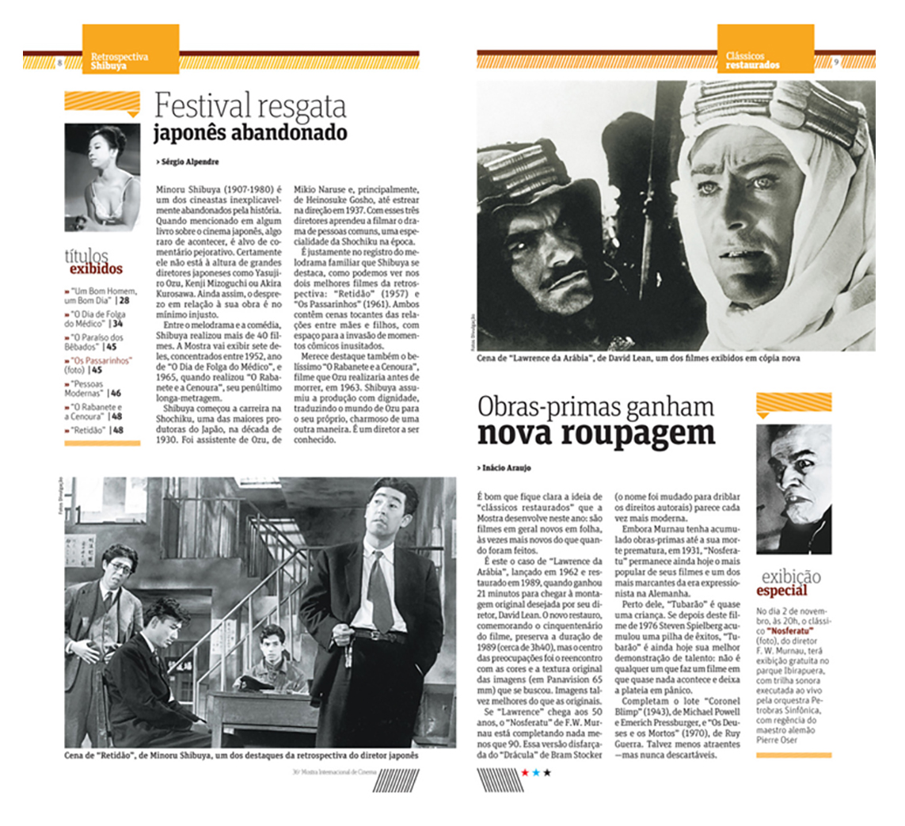
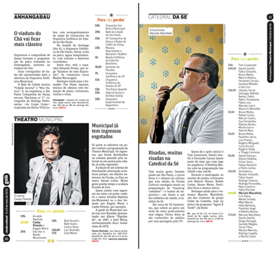
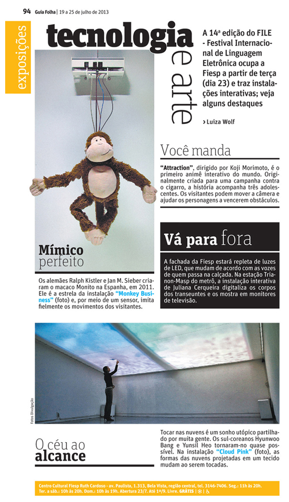

Cover
Creative direction and production of the cover, from the photographic concept to the final editorial layout, developed in collaboration with the editorial team.
A selection of editorial work developed in collaboration with the editorial team and published in Guia Folha, the weekly magazine that accompanies Folha de S.Paulo every Friday.

Creative direction and production of the cover, from the photographic concept to the final editorial layout, developed in collaboration with the editorial team.

Opening spread for the Art section of Guia Folha, introducing new art spaces across the city. Each space is presented through a visual combination of photography and a blueprint-style floor plan, creating a sense of place while helping readers navigate the city’s cultural landscape.

Editorial design system for Cozinha em Cena, a weekly column about restaurants, food, and the people behind them. The system was designed to create a recognisable visual language while remaining flexible enough to respond to the editor’s changing content and weekly production needs.

Design system for the opening pages of Guia de S.Paulo, containing the contents page and four recurring columns. Together, they establish a consistent visual rhythm and set the tone for each week’s guide.

Opening page for the short film festival, highlighting key figures from this year’s edition.

Editorial design system created for a special edition of Guia Folha dedicated to the International Film Festival. The system was designed to highlight key films while making screening times and locations easy for readers to find and navigate.

Editorial design system created specifically for a special edition of Guia Folha dedicated to the Virada Cultural event. The system was developed to capture the energy and diversity of the city-wide cultural event while maintaining the clarity and recognisable visual language of the guide.

Opening page for the Art section of Guia Folha, bringing together highlights from an art event into a concise and visually engaging editorial composition.